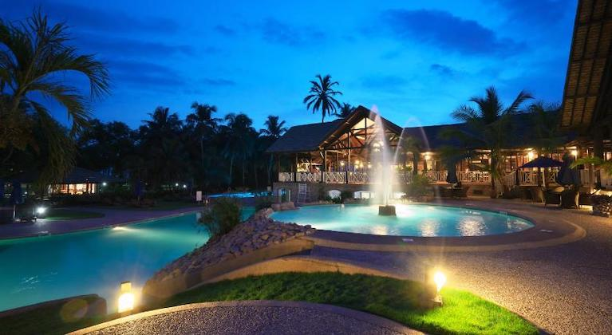

Reasons to Visit

Kakum National Park
Located on the coastal environs of Ghana and home to a few endangered species
More Info

Located on the coastal environs of Ghana and home to a few endangered species
More Info
The “Year of Return, Ghana 2019” was a major landmark marketing campaign targeting the African – American and Diaspora
Market to mark 400 years of the first enslaved African arriving in Jamestown Virginia. The Ghana Tourism Authority (GTA)
under the auspices of the Ministry of Tourism, Arts and Culture led the project in collaboration with the Office of
Diaspora Affairs at the Office of the President, the Panafest Foundation and the Adinkra Group of USA.
The Year of Return sort to make Ghana the focus for millions of African descendants reacting to their marginalisation by
tracing their ancestry and identity. By this, Ghana became the beacon for African people living on the continent and the
diaspora.
Beyond the Return” is a follow-up to the successful “Year Of Return” #YearOfReturn, Ghana 2019’ campaign which
commemorated the 400th Anniversary of the arrival of the first recorded enslaved Africans in Jamestown Virginia in 1619.
The landmark campaign also celebrated the resilience of the African over the past 400 years and welcomed all people of
African origin to return to Africa especially Ghana.
Beyond the Return – is a 10-year project under the theme, “A decade of African Renaissance – 2020-2030” and will be
built on 7 pillars.
For more information on Ghana Click Here